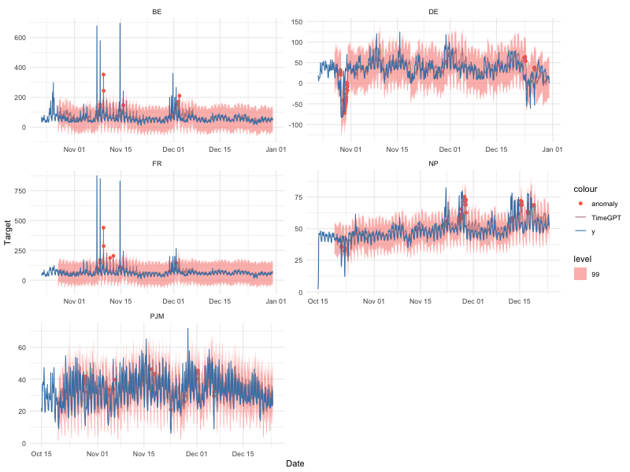

TimeGPT-1
The first foundation model for time series forecasting and anomaly detection
TimeGPT is a production-ready, generative pretrained transformer for time series forecasting, developed by Nixtla. It is capable of accurately predicting various domains such as retail, electricity, finance, and IoT, with just a few lines of code. Additionally, it can detect anomalies in time series data.
TimeGPT was initially developed in Python but is now available to R users through the nixtlar package.
Installation
nixtlar is available on CRAN, so you can install the latest stable version using install.packages.
# Install nixtlar from CRAN
install.packages("nixtlar")
# Then load it
library(nixtlar)Alternatively, you can install the development version of nixtlar from GitHub with devtools::install_github.
# install.packages("devtools")
devtools::install_github("Nixtla/nixtlar")CRAN vs development version
Currently, the development version contains some features not yet available in CRAN. To learn more, please read the release notes here.
Forecast Using TimeGPT in 3 Easy Steps
- Set your API key. Get yours at dashboard.nixtla.io
nixtla_set_api_key(api_key = "Your API key here")- Load sample data
df <- nixtlar::electricity
head(df)
#> unique_id ds y
#> 1 BE 2016-10-22 00:00:00 70.00
#> 2 BE 2016-10-22 01:00:00 37.10
#> 3 BE 2016-10-22 02:00:00 37.10
#> 4 BE 2016-10-22 03:00:00 44.75
#> 5 BE 2016-10-22 04:00:00 37.10
#> 6 BE 2016-10-22 05:00:00 35.61- Forecast the next 8 steps ahead
nixtla_client_fcst <- nixtla_client_forecast(df, h = 8, id_col = "unique_id", level = c(80,95))
#> Frequency chosen: H
head(nixtla_client_fcst)
#> unique_id ds TimeGPT TimeGPT-lo-95 TimeGPT-lo-80
#> 1 BE 2016-12-31 00:00:00 45.19045 32.60115 40.42074
#> 2 BE 2016-12-31 01:00:00 43.24445 29.30454 36.91513
#> 3 BE 2016-12-31 02:00:00 41.95839 28.17721 35.55863
#> 4 BE 2016-12-31 03:00:00 39.79649 25.42790 33.45859
#> 5 BE 2016-12-31 04:00:00 39.20454 23.53869 30.35095
#> 6 BE 2016-12-31 05:00:00 40.10878 26.90472 31.60236
#> TimeGPT-hi-80 TimeGPT-hi-95
#> 1 49.96017 57.77975
#> 2 49.57376 57.18435
#> 3 48.35815 55.73957
#> 4 46.13438 54.16507
#> 5 48.05812 54.87038
#> 6 48.61520 53.31284Optionally, plot the results
nixtla_client_plot(df, nixtla_client_fcst, id_col = "unique_id", max_insample_length = 200)
Anomaly Detection Using TimeGPT in 3 Easy Steps
Do anomaly detection with TimeGPT, also in 3 easy steps! Follow steps 1 and 2 from the previous section and then use the nixtla_client_detect_anomalies and the nixtla_client_plot functions.
nixtla_client_anomalies <- nixtlar::nixtla_client_detect_anomalies(df, id_col = "unique_id")
#> Frequency chosen: H
head(nixtla_client_anomalies)
#> unique_id ds y anomaly TimeGPT-lo-99 TimeGPT
#> 1 BE 2016-10-27 00:00:00 52.58 0 -28.58336 56.07623
#> 2 BE 2016-10-27 01:00:00 44.86 0 -32.23986 52.41973
#> 3 BE 2016-10-27 02:00:00 42.31 0 -31.84485 52.81474
#> 4 BE 2016-10-27 03:00:00 39.66 0 -32.06933 52.59026
#> 5 BE 2016-10-27 04:00:00 38.98 0 -31.98661 52.67297
#> 6 BE 2016-10-27 05:00:00 42.31 0 -30.55300 54.10659
#> TimeGPT-hi-99
#> 1 140.7358
#> 2 137.0793
#> 3 137.4743
#> 4 137.2498
#> 5 137.3326
#> 6 138.7662
nixtlar::nixtla_client_plot(df, nixtla_client_anomalies, id_col = "unique_id", plot_anomalies = TRUE)
Features and Capabilities
nixtlar provides access to TimeGPT’s features and capabilities, such as:
Zero-shot Inference: TimeGPT can generate forecasts and detect anomalies straight out of the box, requiring no prior training data. This allows for immediate deployment and quick insights from any time series data.
Fine-tuning: Enhance TimeGPT’s capabilities by fine-tuning the model on your specific datasets, enabling the model to adapt to the nuances of your unique time series data and improving performance on tailored tasks.
Add Exogenous Variables: Incorporate additional variables that might influence your predictions to enhance forecast accuracy. (E.g. Special Dates, events or prices)
Multiple Series Forecasting: Simultaneously forecast multiple time series data, optimizing workflows and resources.
Custom Loss Function: Tailor the fine-tuning process with a custom loss function to meet specific performance metrics.
Cross Validation: Implement out of the box cross-validation techniques to ensure model robustness and generalizability.
Prediction Intervals: Provide intervals in your predictions to quantify uncertainty effectively.
Irregular Timestamps: Handle data with irregular timestamps, accommodating non-uniform interval series without preprocessing.
Documentation
For comprehensive documentation, please refer to our vignettes, which cover a wide range of topics to help you effectively use nixtlar. The current documentation includes guides on how to:
- Get started and set up your API key
- Do anomaly detection
- Perform time series cross-validation
- Use exogenous variables
- Generate historical forecasts
The documentation is an ongoing effort, and we are working on expanding its coverage.
API Support
Are you a Python user? If yes, then check out the Python SDK for TimeGPT. You can also refer to our API reference for support in other programming languages.
How to Cite
If you find TimeGPT useful for your research, please consider citing the TimeGPT-1 paper. The associated reference is shown below.
Garza, A., Challu, C., & Mergenthaler-Canseco, M. (2024). TimeGPT-1. arXiv preprint arXiv:2310.03589. Available at https://arxiv.org/abs/2310.03589
License
TimeGPT is closed source. However, this SDK is open source and available under the Apache 2.0 License, so feel free to contribute!
Get in Touch
We welcome your input and contributions to the nixtlar package!
Report Issues: If you encounter a bug or have a suggestion to improve the package, please open an issue in GitHub.
Contribute: You can contribute by opening a pull request in our repository. Whether it is fixing a bug, adding a new feature, or improving the documentation, we appreciate your help in making
nixtlarbetter.